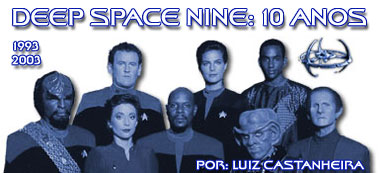
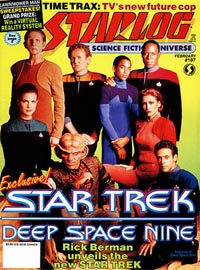
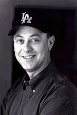
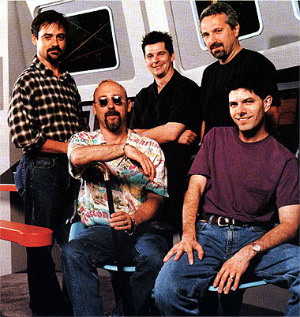
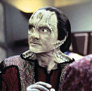
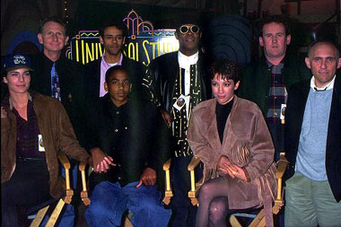
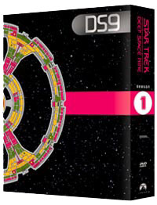
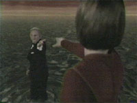
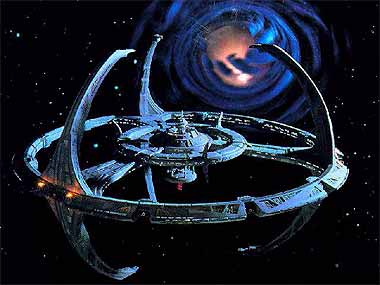

|

Publicado originalmente
em 7 de janeiro de 2003

Tributo: 10 anos de Deep
Space Nine
Uma homenagem
primeira dcada da estria da srie que revolucionou a forma de se
pensar Jornada nas Estrelas

|
 O seu jeito  H cerca de dez anos subia ao satlite da Paramount o episdio piloto de Deep Space Nine, "Emissary". Ele trazia o desejo dos executivos do estdio em lucrar com a alta de popularidade da marca, na esteira dos seus 25 anos, e tambm o desejo do criador Michael Piller em oferecer uma viso indita de Jornada nas Estrelas. "Emissary" foi o episdio mais assistido da era moderna de Jornada, o que serviu para colocar de forma ampla para a comunidade de fs que esta era uma srie muito diferente das outras da Franquia.Ao utilizar um cenrio estacionrio (uma abandonada estao de minerao aliengena caindo aos pedaos e outrora palco de trabalho escravo), tratar com propriedade de temas praticamente ausentes do restante de Jornada (f, religio, guerra, poltica...) e pela primeira vez trazer personagens no-Federados (em particular uma religiosa ex-guerrilheira, um formal ex-feitor de escravos e um trapaceiro) entre os regulares; a srie alienou muitos fs que no conseguiam identificar o que viam como Jornada. Mas a sua atitude diferenciada e inovadora dentro da marca angariou ao longo dos anos um pblico fiel que entendeu a sua proposta e foi definitivamente recompensado por tal compromisso em longo prazo.  Da mesma forma que o comeo de A Nova Gerao (ainda com Gene Roddenberry no controle) foi uma resposta ao estilo de cinema de Jornada estabelecido por Nicholas Meyer, o comeo de DS9 foi uma reao a A Nova Gerao. Nesta ltima situao, um curioso impasse surgiu. Piller foi responsvel pela "virada" de qualidade da turma de Picard e cia. durante a sua terceira temporada (e permaneceu ligado srie at o final) e tambm criou DS9 e a desenvolveu inicialmente. Obviamente havia algum limite para o quanto Piller poderia "reagir contra ele mesmo". Ele deixou DS9 gradativamente durante a sua terceira temporada para que Ira Steven Behr (o nome que se tornou sinnimo de Deep Space Nine) pudesse liberar todo o potencial da premissa da srie. Da esquerda para direita, o staff de produo da srie: Ren Echevarria, Ira Steven Behr, Ron Moore, Hans Beimler e Robert Hewitt Wolfe (sentado) A grande variedade (de formato e gnero) trazida para os episdios da srie (expandindo de forma indita uma caracterstica que sempre fez parte de Jornada - sendo um dos principais motivos para o seu sucesso em primeiro lugar) e o seu claro enfoque nos personagens em geral (e principalmente na complexidade destas caracterizaes e da dinmica advinda deste paradigma) foram outras marcas registradas do programa. claro que fs que apreciam um formato fixo (que gostam de saber o que vo receber vez aps vez ou prximo a isto) e que praticamente exigem algum "payoff" em termos de ao a cada episdio no se sentiram muito vontade com a srie. Mas a sua diversidade e amor pelos seus personagens fizeram toda a diferena para os dedicados fs que a acompanharam no curso das sete temporadas.  Em certo sentido a histria de Jornada um relato de uma poca utpica para a humanidade muito depois dela ter enfrentado a sua quase extino (com a terceira guerra mundial na Terra). Em DS9 vemos o incio de um processo similar, um em que temos personagens imperfeitos, em um cenrio inspito (" fcil ser santo no paraso") e submetidos a situaes extremas. Os personagens (a maioria com srios problemas e dilemas pessoais, de toda sorte) encontram sua redeno sim (ao final), mas os eventos no desguam em nenhuma espcie de utopia, muito pelo contrrio. Levam a um cenrio catico e sombrio, sendo por isto sua concluso mais tocante e mais de acordo com as complexidades do mundo real (e dos seus inmeros "tons de cinza") do que Jornada normalmente em suas outras encarnaes. Um elemento que foi muito importante para desenvolver tal "processo" foi utilizao de arcos de histria. Arcos de histria (notadamente aquele que envolve o papel de Sisko como Emissrio dos Profetas de Bajor e o arco da guerra com o Dominion) trouxeram um aspecto pico a srie que raramente esta presente nas outras partes da Franquia. O elenco original. Em p: Rene Auberjonois (Odo), Alexander Siddig (Bashir), Avery Brooks (Sisko), Colm Meaney (O'Brien) e Armin Shimerman (Quark). Sentados: Terry Farrell (Jadzia Dax), Cirroc Lofton (Jake) e Nana Visitor (Kira Nerys) Um bom ano para DS9  Este ano de 2003 parece que vai ser um bom ano para a srie, seguindo o seu aniversrio de dez anos, DS9 ser lanada integralmente em DVD at dezembro (e esperamos que com melhores extras que os DVDs da Nova Gerao). Tambm a srie encerra as suas reprises dirias em syndication na Amrica (um perodo que no foi particularmente benfico a srie, devido a inconstncia da sua exibio nas emissoras ao longo dos EUA). Ano que vem (2004) a srie passar a ser exibida apenas na TNN (canal por assinatura tambm pertencente a Viacom, conglomerado dono da Paramount, dona de Jornada), situao em que srie poder ser mais bem apreciada em ordem cronolgica, de forma consistente e de maneira alinhada por todo o pas do "Tio Sam".A possibilidade de termos projetos futuros da srie so essencialmente nulas e levando em conta o atual estado criativo da Franquia, isto um favor a Deep Space Nine. Com a maneira que DS9 acabou, qualquer projeto futuro se torna de concepo bastante difcil, devido (primariamente, mas no exclusivamente) ao destino final dado aos seus personagens. Tarefa extremamente difcil mesmo se a equipe criativa original da srie estivesse envolvida em tal suposto projeto. Outro grande receio que um eventual (por exemplo) filme para o cinema pudesse trazer uma verso por demais simplificada (com uma trama envolvendo um "vilo da vez" por exemplo) e descaracterizada da srie (eventualmente distorcida para parecer algo que ela no , o que pode se dar de diversas maneiras diferentes, para poder "caber" no conceito destes eventuais realizadores). Felizmente nunca veremos projetos neste sentido sendo realizados. Um pequeno exemplo do quo danosas tais produes podem ser para o que foi estabelecido em DS9 (se extremos cuidados no forem tomados por seus realizadores) o "reset pstumo" recebido pela srie no recente filme "Nmesis", tanto no retrocesso profissional de Worf - feito embaixador e brao direito do chanceler Klingon Martok em "What You Leave Behind" (ltimo episdio da srie) - quanto nas desfeitas relaes polticas entre a Federao e os Romulanos - que foram aliados na guerra com o Dominion. O que se deixa para trs... Para o melhor e para o pior (e a menos de lamentveis ocorrncias, como aquelas citadas do filme "Nmesis") o legado da srie ser preservado. Existe uma grande satisfao e um claro senso de fechamento nisto. DS9 uma srie genuinamente de Jornada (situada no mesmo universo ficcional e respeitando a mesma cronologia e eventos das demais), mas que paradoxalmente conseguiu criar um (sub) universo muito prprio (o que foi facilitado e fortalecido pela sua premissa envolvendo um cenrio estacionrio), ao introduzir novos elementos e ao colocar sua clara assinatura em outros j existentes. Ao resgatar a plenitude do esprito da Srie Clssica (de certa forma perdido com A Nova Gerao, principalmente por causa do prprio Rodenberry - em mais um dos famosos paradoxos de Jornada), DS9 se apresentou como a sua herdeira de fato. Ao introduzir uma metodologia televisiva mais contempornea (srie de elenco, um grande elenco recorrente, drama orientado a personagens, caracterizao tridimensional, arcos de histrias...) DS9 modernizou Jornada, deixando implcito um arcabouo sobre o qual diferentes conceitos (mesmo de sries completas) poderiam ser construdos posteriormente, conceitos que eventualmente poderiam superar mesmo o sucesso artstico de DS9. Algo que s fortaleceria (e no o contrrio) o legado da srie de Sisko e cia. O futuro parece reservar algum eventual reconhecimento srie (acreditam muitos), mas o fato de tal "profecia" se realizar ou no talvez nem importe tanto. Existe uma grande satisfao em ser f de uma srie "excelente para poucos" em contrapartida a uma srie "boa para muitos". Em uma srie "para poucos" (como DS9) a extrema ressonncia entre as sensibilidades dos realizadores e a dos seus espectadores leva por vezes a momentos simplesmente mgicos. Em que partes da vida real dos espectadores so "mostradas" ou "comentadas" na telinha e os seus sonhos de fazer parte do processo de criao da srie parecem ser atendidos ("- Eu queria tanto ter escrito esta histria, ainda bem que algum o fez por mim!").  "Quanto mais a coisas mudam mais elas permanecem as mesmas". Assim terminava aquela que a melhor de todas as Jornadas. Definindo bem a sua prpria essncia. Ficam agradecimentos a todos que apoiaram e apiam DS9 de uma forma ou outra, todos os responsveis pela sua produo e principalmente a Ira Steven Behr pela sua viso e pelo grande amor que sempre demonstrou pela srie. Aps a filmagem da ltima cena da srie, na hora dos tcnicos desmontarem o cenrio da boate de Vic Fontaine, Ira ficou sentado sozinho em uma mesa daquela "Las Vegas hologrfica", j no escuro. Interpelado para deixar o estdio, para que este pudesse ser fechado, Behr disse: "- Eu tenho muito tempo para no estar aqui".Peldor Joi  NOTA: De qualquer forma, h um paliativo para os fs
que porventura venham a enfrentar uma eventual "crise de
abstinncia" por material indito da srie de qualquer espcie.
Existe uma srie de livros que conta s aventuras de Deep
Space Nine aps o seu final na televiso, apelidada como "DS9
Relaunch" ("O relanamento de DS9").
Novos personagens so "trazidos a bordo" da estao,
para ocupar os lugares vagos deixados ao final da srie na TV,
alguns totalmente novos para a Franquia e alguns outros velhos
conhecidos dos fs como o Cardassiano gul Macet (do episdio "The
Wounded" de A Nova Gerao) e Ro Laren. |